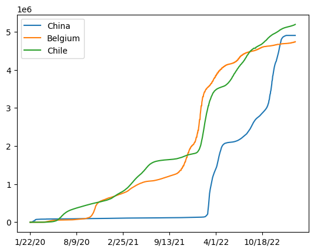
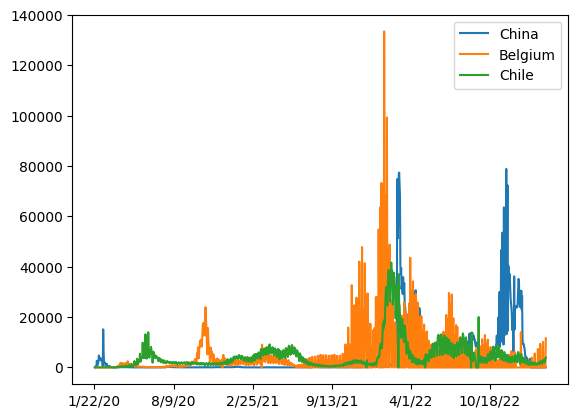
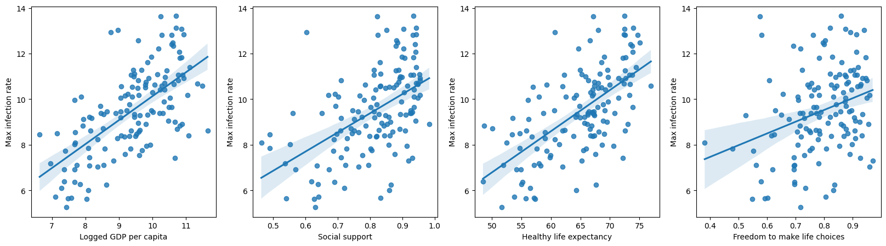

Code
import pandas as pdimport numpy as npimport seaborn as snsimport matplotlib.pyplot as plt/kaggle/input/covid19-data-from-john-hopkins-university/CONVENIENT_global_deaths.csv
/kaggle/input/covid19-data-from-john-hopkins-university/RAW_global_deaths.csv
/kaggle/input/covid19-data-from-john-hopkins-university/RAW_global_confirmed_cases.csv
/kaggle/input/covid19-data-from-john-hopkins-university/CONVENIENT_us_deaths.csv
/kaggle/input/covid19-data-from-john-hopkins-university/CONVENIENT_global_metadata.csv
/kaggle/input/covid19-data-from-john-hopkins-university/RAW_us_confirmed_cases.csv
/kaggle/input/covid19-data-from-john-hopkins-university/CONVENIENT_us_confirmed_cases.csv
/kaggle/input/covid19-data-from-john-hopkins-university/CONVENIENT_global_confirmed_cases.csv
/kaggle/input/covid19-data-from-john-hopkins-university/CONVENIENT_us_metadata.csv
/kaggle/input/covid19-data-from-john-hopkins-university/RAW_us_deaths.csv
/kaggle/input/world-happiness-report-2021/world-happiness-report-2021.csv
/kaggle/input/world-happiness-report-2021/world-happiness-report.csv| Country/Region | Province/State | Lat | Long | 1/22/20 | 1/23/20 | 1/24/20 | 1/25/20 | 1/26/20 | 1/27/20 | ... | 2/28/23 | 3/1/23 | 3/2/23 | 3/3/23 | 3/4/23 | 3/5/23 | 3/6/23 | 3/7/23 | 3/8/23 | 3/9/23 | |
|---|---|---|---|---|---|---|---|---|---|---|---|---|---|---|---|---|---|---|---|---|---|
| 0 | Afghanistan | NaN | 33.93911 | 67.709953 | 0 | 0 | 0 | 0 | 0 | 0 | ... | 209322 | 209340 | 209358 | 209362 | 209369 | 209390 | 209406 | 209436 | 209451 | 209451 |
| 1 | Albania | NaN | 41.15330 | 20.168300 | 0 | 0 | 0 | 0 | 0 | 0 | ... | 334391 | 334408 | 334408 | 334427 | 334427 | 334427 | 334427 | 334427 | 334443 | 334457 |
| 2 | Algeria | NaN | 28.03390 | 1.659600 | 0 | 0 | 0 | 0 | 0 | 0 | ... | 271441 | 271448 | 271463 | 271469 | 271469 | 271477 | 271477 | 271490 | 271494 | 271496 |
| 3 | Andorra | NaN | 42.50630 | 1.521800 | 0 | 0 | 0 | 0 | 0 | 0 | ... | 47866 | 47875 | 47875 | 47875 | 47875 | 47875 | 47875 | 47875 | 47890 | 47890 |
| 4 | Angola | NaN | -11.20270 | 17.873900 | 0 | 0 | 0 | 0 | 0 | 0 | ... | 105255 | 105277 | 105277 | 105277 | 105277 | 105277 | 105277 | 105277 | 105288 | 105288 |
5 rows × 1147 columns
| 1/22/20 | 1/23/20 | 1/24/20 | 1/25/20 | 1/26/20 | 1/27/20 | 1/28/20 | 1/29/20 | 1/30/20 | 1/31/20 | ... | 2/28/23 | 3/1/23 | 3/2/23 | 3/3/23 | 3/4/23 | 3/5/23 | 3/6/23 | 3/7/23 | 3/8/23 | 3/9/23 | |
|---|---|---|---|---|---|---|---|---|---|---|---|---|---|---|---|---|---|---|---|---|---|
| Country/Region | |||||||||||||||||||||
| Afghanistan | 0 | 0 | 0 | 0 | 0 | 0 | 0 | 0 | 0 | 0 | ... | 209322 | 209340 | 209358 | 209362 | 209369 | 209390 | 209406 | 209436 | 209451 | 209451 |
| Albania | 0 | 0 | 0 | 0 | 0 | 0 | 0 | 0 | 0 | 0 | ... | 334391 | 334408 | 334408 | 334427 | 334427 | 334427 | 334427 | 334427 | 334443 | 334457 |
| Algeria | 0 | 0 | 0 | 0 | 0 | 0 | 0 | 0 | 0 | 0 | ... | 271441 | 271448 | 271463 | 271469 | 271469 | 271477 | 271477 | 271490 | 271494 | 271496 |
| Andorra | 0 | 0 | 0 | 0 | 0 | 0 | 0 | 0 | 0 | 0 | ... | 47866 | 47875 | 47875 | 47875 | 47875 | 47875 | 47875 | 47875 | 47890 | 47890 |
| Angola | 0 | 0 | 0 | 0 | 0 | 0 | 0 | 0 | 0 | 0 | ... | 105255 | 105277 | 105277 | 105277 | 105277 | 105277 | 105277 | 105277 | 105288 | 105288 |
5 rows × 1143 columns
<matplotlib.legend.Legend at 0x7de852deaf90>
<matplotlib.legend.Legend at 0x7de851ee8a90>
| Max infection rate | |
|---|---|
| Country/Region | |
| Afghanistan | 3243.0 |
| Albania | 4789.0 |
| Algeria | 2521.0 |
| Andorra | 2313.0 |
| Angola | 5035.0 |
| Country name | Regional indicator | Ladder score | Standard error of ladder score | upperwhisker | lowerwhisker | Logged GDP per capita | Social support | Healthy life expectancy | Freedom to make life choices | Generosity | Perceptions of corruption | Ladder score in Dystopia | Explained by: Log GDP per capita | Explained by: Social support | Explained by: Healthy life expectancy | Explained by: Freedom to make life choices | Explained by: Generosity | Explained by: Perceptions of corruption | Dystopia + residual | |
|---|---|---|---|---|---|---|---|---|---|---|---|---|---|---|---|---|---|---|---|---|
| 0 | Finland | Western Europe | 7.842 | 0.032 | 7.904 | 7.780 | 10.775 | 0.954 | 72.0 | 0.949 | -0.098 | 0.186 | 2.43 | 1.446 | 1.106 | 0.741 | 0.691 | 0.124 | 0.481 | 3.253 |
| 1 | Denmark | Western Europe | 7.620 | 0.035 | 7.687 | 7.552 | 10.933 | 0.954 | 72.7 | 0.946 | 0.030 | 0.179 | 2.43 | 1.502 | 1.108 | 0.763 | 0.686 | 0.208 | 0.485 | 2.868 |
| 2 | Switzerland | Western Europe | 7.571 | 0.036 | 7.643 | 7.500 | 11.117 | 0.942 | 74.4 | 0.919 | 0.025 | 0.292 | 2.43 | 1.566 | 1.079 | 0.816 | 0.653 | 0.204 | 0.413 | 2.839 |
| 3 | Iceland | Western Europe | 7.554 | 0.059 | 7.670 | 7.438 | 10.878 | 0.983 | 73.0 | 0.955 | 0.160 | 0.673 | 2.43 | 1.482 | 1.172 | 0.772 | 0.698 | 0.293 | 0.170 | 2.967 |
| 4 | Netherlands | Western Europe | 7.464 | 0.027 | 7.518 | 7.410 | 10.932 | 0.942 | 72.4 | 0.913 | 0.175 | 0.338 | 2.43 | 1.501 | 1.079 | 0.753 | 0.647 | 0.302 | 0.384 | 2.798 |
| Logged GDP per capita | Social support | Healthy life expectancy | Freedom to make life choices | |
|---|---|---|---|---|
| Country name | ||||
| Finland | 10.775 | 0.954 | 72.0 | 0.949 |
| Denmark | 10.933 | 0.954 | 72.7 | 0.946 |
| Switzerland | 11.117 | 0.942 | 74.4 | 0.919 |
| Iceland | 10.878 | 0.983 | 73.0 | 0.955 |
| Netherlands | 10.932 | 0.942 | 72.4 | 0.913 |
| Max infection rate | Logged GDP per capita | Social support | Healthy life expectancy | Freedom to make life choices | |
|---|---|---|---|---|---|
| Afghanistan | 3243.0 | 7.695 | 0.463 | 52.493 | 0.382 |
| Albania | 4789.0 | 9.520 | 0.697 | 68.999 | 0.785 |
| Algeria | 2521.0 | 9.342 | 0.802 | 66.005 | 0.480 |
| Argentina | 139853.0 | 9.962 | 0.898 | 69.000 | 0.828 |
| Armenia | 4388.0 | 9.487 | 0.799 | 67.055 | 0.825 |
| Max infection rate | Logged GDP per capita | Social support | Healthy life expectancy | Freedom to make life choices | |
|---|---|---|---|---|---|
| Max infection rate | 1.000000 | 0.322941 | 0.236806 | 0.344605 | 0.052039 |
| Logged GDP per capita | 0.322941 | 1.000000 | 0.798452 | 0.872090 | 0.456510 |
| Social support | 0.236806 | 0.798452 | 1.000000 | 0.748850 | 0.486266 |
| Healthy life expectancy | 0.344605 | 0.872090 | 0.748850 | 1.000000 | 0.493911 |
| Freedom to make life choices | 0.052039 | 0.456510 | 0.486266 | 0.493911 | 1.000000 |
fig, axs = plt.subplots(ncols=4, figsize=(20, 5))oy = np.log(data["Max infection rate"])sns.regplot(x = data['Logged GDP per capita'], y = oy , ax=axs[0])sns.regplot(x = data['Social support'], y = oy , ax=axs[1])sns.regplot(x = data['Healthy life expectancy'], y = oy , ax=axs[2])sns.regplot(x = data['Freedom to make life choices'], y = oy , ax=axs[3])<Axes: xlabel='Freedom to make life choices', ylabel='Max infection rate'>